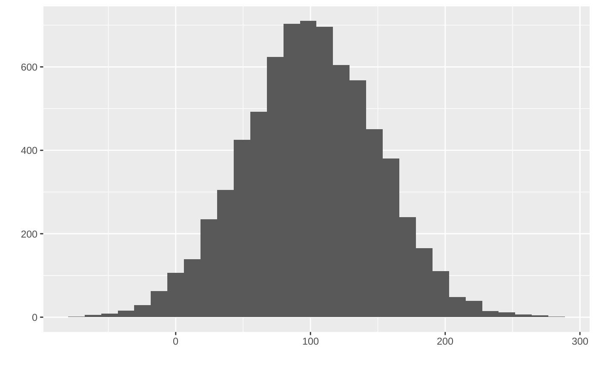

Standardizes a Design Matrix
std.RdThis function accepts a design matrix and returns a standardized version of that matrix,
the statistics of each column such as median and sd are also provided.
std(X, tol = 1e-06)
Arguments
| X | Design matrix, of dimension |
|---|---|
| tol | The tolerance value; a column of |
Value
The standardized design matrix with the following attributes:
- nonsingular
Indices of non-singular columns.
- center
Median of each non-singular column which is used for standardization.
- scale
Standard deviation of each non-singular column which is used for standardization.
Details
For each column of X, the standardization is done by first subtracting its median,
then dividing by its sample standard deviation, while the original version in ncvreg uses
mean and population standard deviation. Its speed is slower than ncvreg because of the
complexity of median finding, but still substantially faster than scale() provided by R base.
See also
Examples
set.seed(123) mat <- matrix(rnorm(n = 80 * 90, mean = 100, sd = 50), 80, 90) mat %>% as.numeric() %>% ggplot2::qplot(bins = 30, xlab = '')